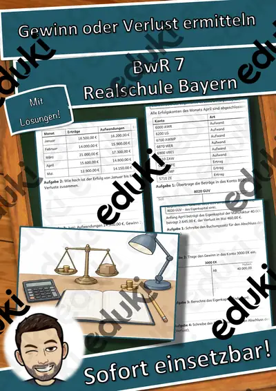
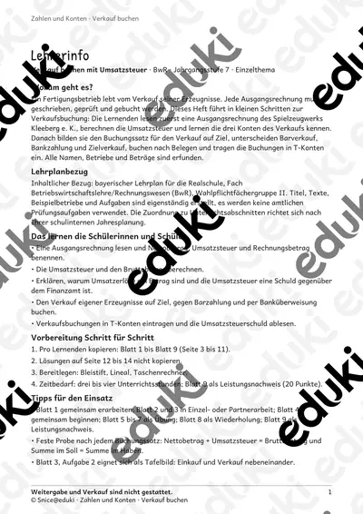
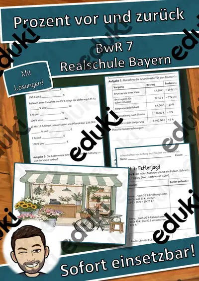
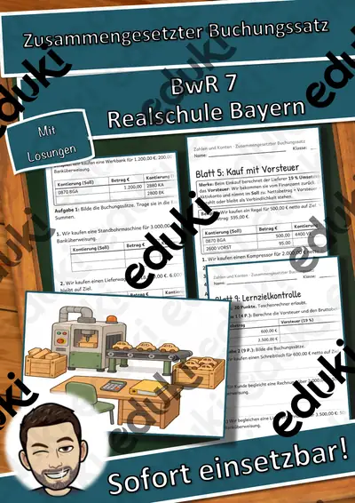
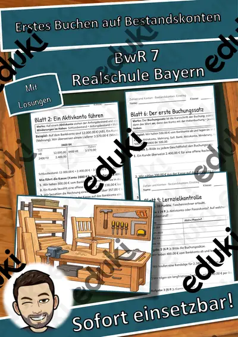
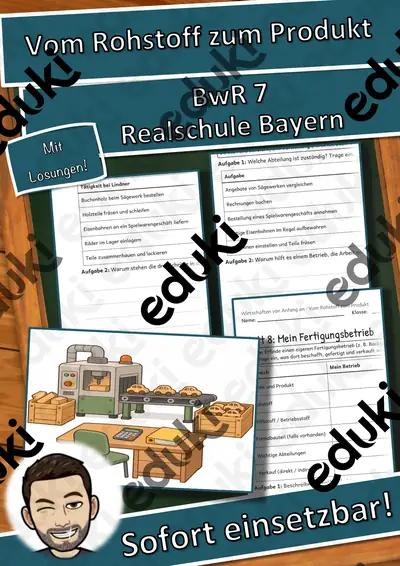
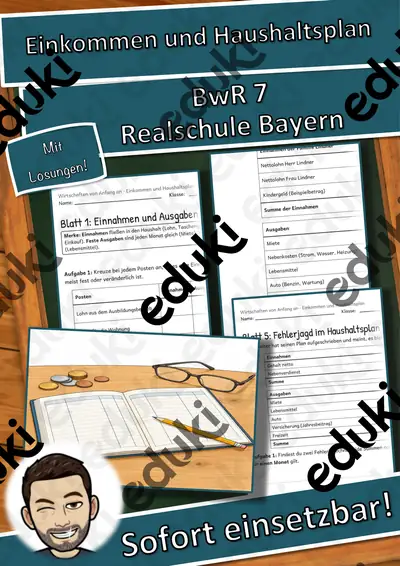
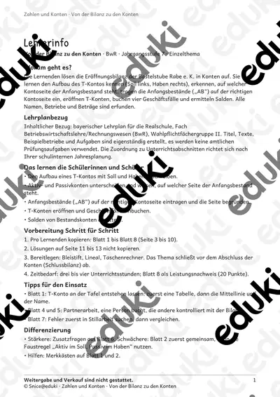
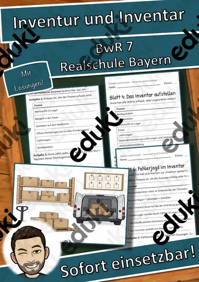
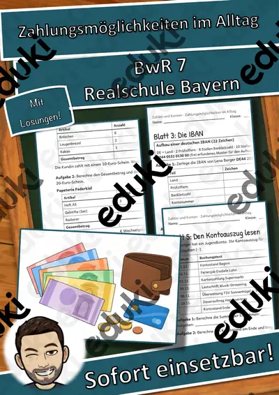

Der Flohmarkt – Lesespurgeschichte mit Rätselaufgaben (Klasse 7)

Angebotsvergleich und Sofortrabatt – Arbeitsheft mit Lösungen (BwR 7, Realschule Bayern)

Gewinn oder Verlust ermitteln – Arbeitsheft mit Lösungen (BwR 7, Realschule Bayern)

Verkauf buchen mit Umsatzsteuer – Arbeitsheft mit Lösungen (BwR 7, Realschule Bayern)

Einkauf buchen mit Vorsteuer – Arbeitsheft mit Lösungen (BwR 7, Realschule Bayern)

Prozent vor und zurück – Arbeitsheft mit Lösungen (BwR 7, Realschule Bayern)

Grundwert finden – Arbeitsheft mit Lösungen (BwR 7, Realschule Bayern)

Prozentsatz bestimmen – Arbeitsheft mit Lösungen (BwR 7, Realschule Bayern)

Prozentwert berechnen – Arbeitsheft mit Lösungen (BwR 7, Realschule Bayern)

Zusammengesetzter Buchungssatz – Arbeitsheft mit Lösungen (BwR 7, Realschule Bayern)

Erstes Buchen auf Bestandskonten – Arbeitsheft mit Lösungen (BwR 7, Realschule Bayern)

Buchungssätze lesen und verstehen – Arbeitsheft mit Lösungen (BwR 7, Realschule Bayern)

Belege im Betrieb: erkennen, prüfen und ordnen – Arbeitsheft mit Lösungen (BwR 7, Realschule Bayern)

Vom Rohstoff zum Produkt – Arbeitsheft mit Lösungen (BwR 7, Realschule Bayern)

Rechtsform und Firmenname: Grundlagen für Unternehmen – Arbeitsheft mit Lösungen (BwR 7, Realschule)

Der Weg zur Unternehmensgründung – Arbeitsheft mit Lösungen (BwR 7, Realschule Bayern)

Produktionsfaktoren: Standortwahl und Entscheidung – Arbeitsheft mit Lösungen (BwR 7, Realschule)

Einkommen und Haushaltsplan – Arbeitsheft mit Lösungen (BwR 7, Realschule Bayern)

Prozentrechnung: Rechnen im Wirtschaftsalltag – Arbeitsheft mit Lösungen (BwR 7, Realschule Bayern)

Umsatzsteuer im Betrieb – Arbeitsheft mit Lösungen (BwR 7, Realschule Bayern)

Von der Bilanz zu den Konten – Arbeitsheft mit Lösungen (BwR 7, Realschule Bayern)

Geschäftsfälle und Bilanz – Arbeitsheft mit Lösungen (BwR 7, Realschule Bayern)

Bilanz aufstellen und lesen – Arbeitsheft mit Lösungen (BwR 7, Realschule Bayern)

Inventur und Inventar – Arbeitsheft mit Lösungen (BwR 7, Realschule Bayern)

Zahlungsmöglichkeiten im Alltag – Arbeitsheft mit Lösungen (BwR 7, Realschule Bayern)

Ausbildungsvertrag Basics – Bewerbung & Praktikum, 3 Stufen, mit Hilfen & Lösungen (Klasse 7–10)

Verhalten im Betrieb – Bewerbung & Praktikum, 3 Stufen, mit Hilfen & Lösungen (Klasse 7–10)

Arbeitsschutz & Jugendarbeitsschutzgesetz – Bewerbung & Praktikum, 3 Stufen, mit Hilfen & Lösungen (Klasse 7–10)
Keine Materialien gefunden – versuch einen anderen Suchbegriff oder Filter.